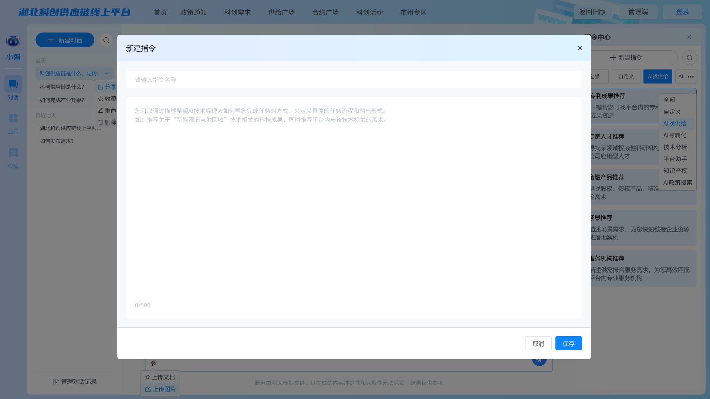
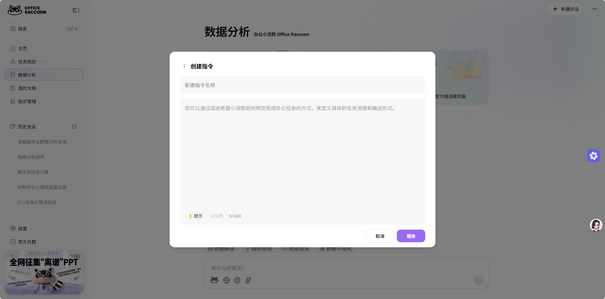
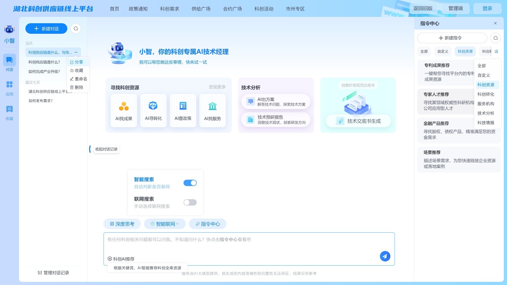
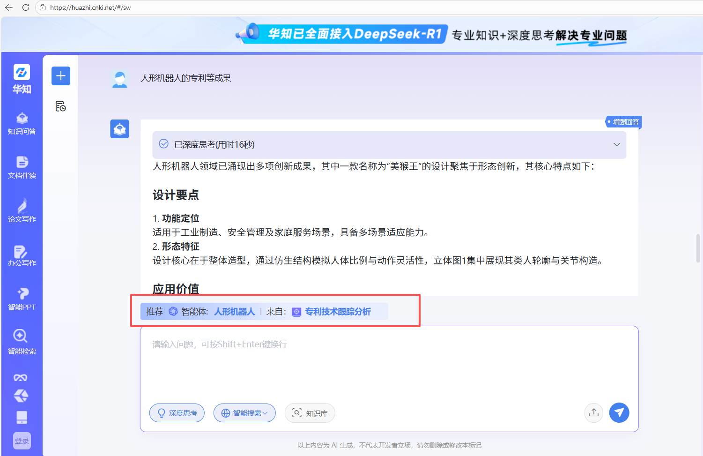
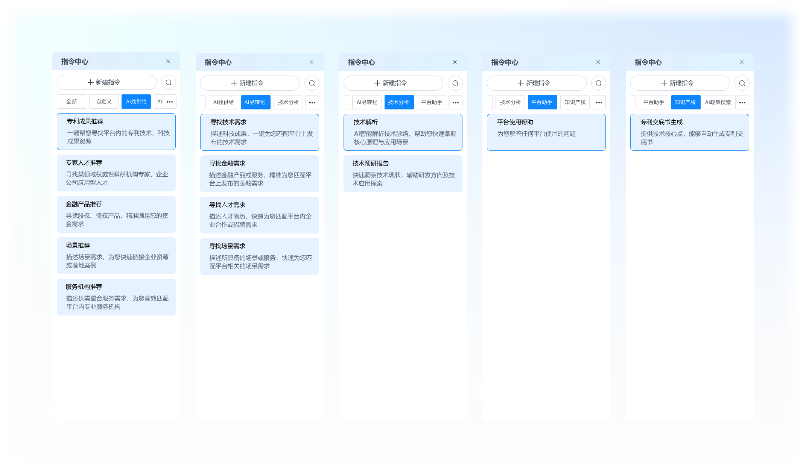

1223原型反馈

新建指令的页面太大了，参考右图示例尺寸和布局


联网设计三种状态图标，不开启任何联网、智能联网、联网搜索，建议可以从颜色上进行区分


指令优化
增加一个指令优化图标。
支持润色指令

输入框高度再稍高一些
在平台首页/主页AI技术经理人窗口输入问题后
AI技术经理人类似一个大脑，能根据用户提出的问题，识别用户意图（是找专家/找成果还是找什么资源），并智能推荐对应子（即垂类）智能体（AI找专家/AI找成果...），并在页面显示所匹配的是哪个子智能体（可图1参考华知大模型的技术效果）。（逻辑上类似豆包智能体能能识别是生图/写作/编程...）
1、意图识别
关键词 + 意图分类：解析用户输入的内容关键词，自动匹配子智能体：
用户输入内容意图明确→ 直接匹配对应子智能体（如 “找人形机器人专家”→ 匹配 AI 找专家）；
用户输入内容意图模糊→ 触发引导交互：针对无明确动作的输入，生成与平台资源对应的引导选项（覆盖所有子智能体场景），引导选项用户选择后，直接分发至对应子智能体。用户不选择或补充其他信息直接对应自由回答。
例如：用户仅输入技术领域关键词，判定模糊意图后，可显示一些引导内容：
引导话术：“请问你输入‘人形机器人’是需要小智寻找以下哪类资源”；
选项按钮组
「找成果」 问题示例：寻找人形机器人领域相关成果资源
「找专家」问题示例
[寻转化] 问题示例
模糊输入场景示例
1. 技术 / 领域模糊场景 仅输入技术名词 / 产业领域，无需求动作 “人形机器人”“光电芯片”“新能源汽车” 引导语+引导选项：「找成果」+问题示例「找专家」」+问题示例「寻转化」+」+问题示例「出方案」+」+问题示例
2. 资源统称模糊场景 仅输入资源类型，无具体需求指向 “专利”、“专家”、“实验室资源” 提示 引导用户补充一些关键信息，
3. 动作泛化模糊场景 仅输入模糊动作，无明确资源 / 需求 “我需要资源”“帮我解决问题” ，提示 引导用户补充一些关键信息，
4. 产业 / 分析模糊 “新能源储能产业”“湖北芯片产业” 仅提产业名，未说明分析需求,提示 引导用户补充一些关键信息
5.政策/服务模糊，仅输入“知识产权”、“企业补贴”等，仅提服务 / 政策名，未说明诉求，提示 引导用户补充一些关键信息
...
2、子智能体推荐
识别意图后，自动调用对应垂类子智能体（AI 找专家 / AI 找成果 / AI 找资金 / AI 找服务等）执行任务，并显示推荐的子智能体（UI交互等可参考右图华知大模型）。需要提供UI设计图

